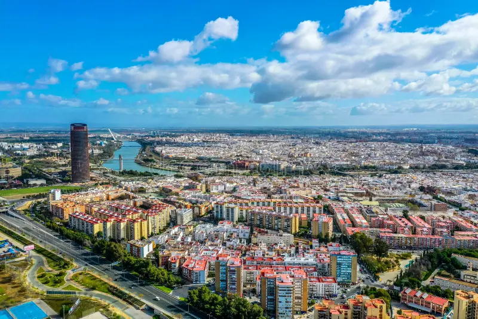
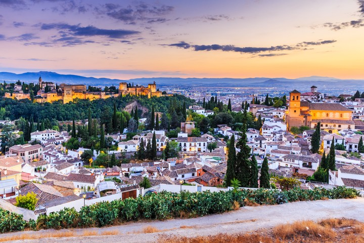
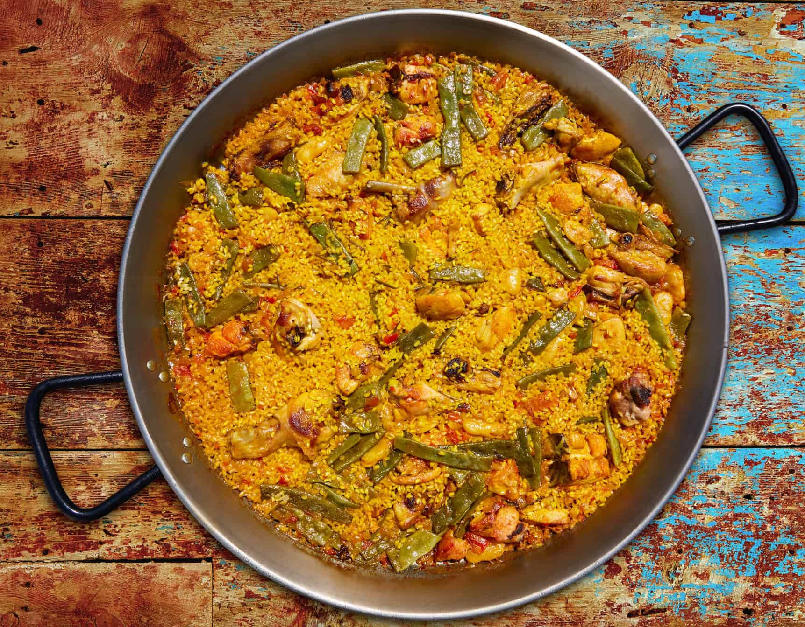
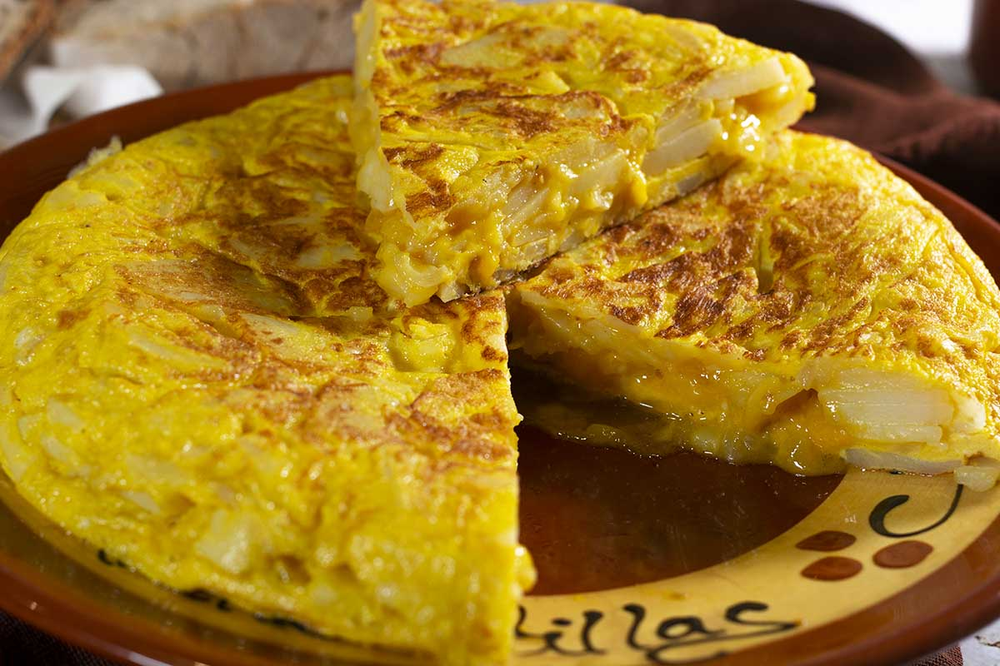
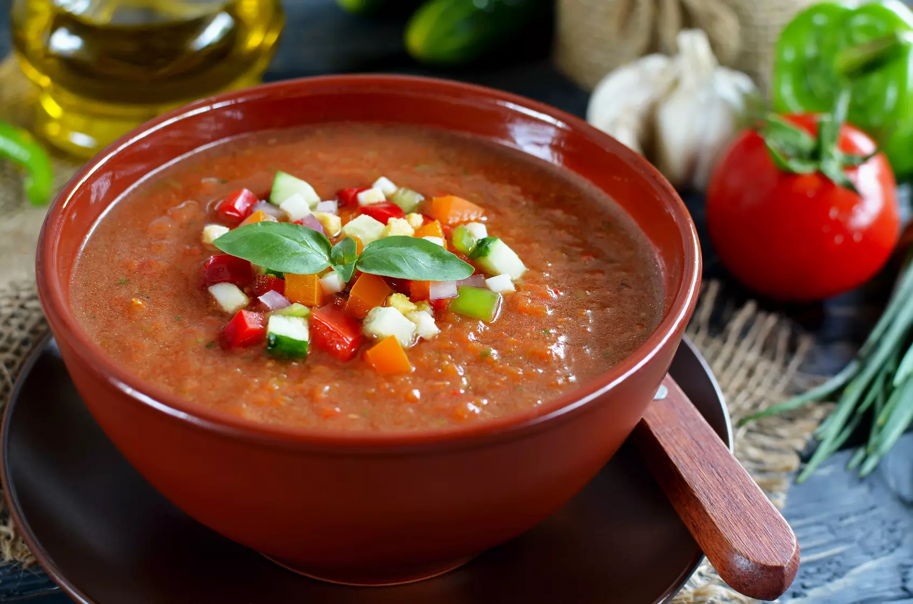
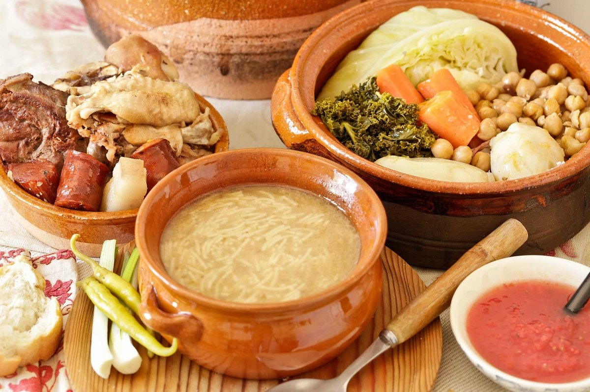
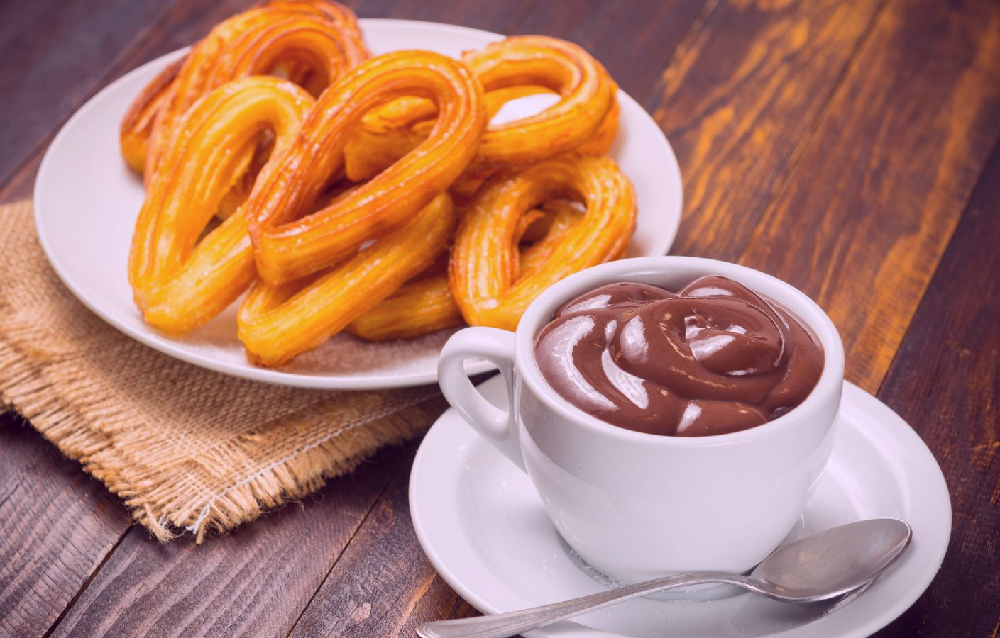

Inverno
- Dicembre
- Gennaio
- Febbraio




Riso cotto in padella larga con zafferano e ingredienti tradizionali come pollo, coniglio e fagioli.

Frittata spessa di patate e uova, preparata con o senza cipolla secondo la tradizione di famiglia.

Zuppa fredda frullata di pomodoro e verdure, ideale nelle calde giornate estive.
Patate a pezzi fritte e servite con una salsa speziata, spesso accompagnate da aioli.

Stufato sostanzioso di ceci, verdure e carni, tradizionalmente servito in più portate.

Bastoncini di pasta fritta, spesso gustati a colazione o a merenda con cioccolata densa.